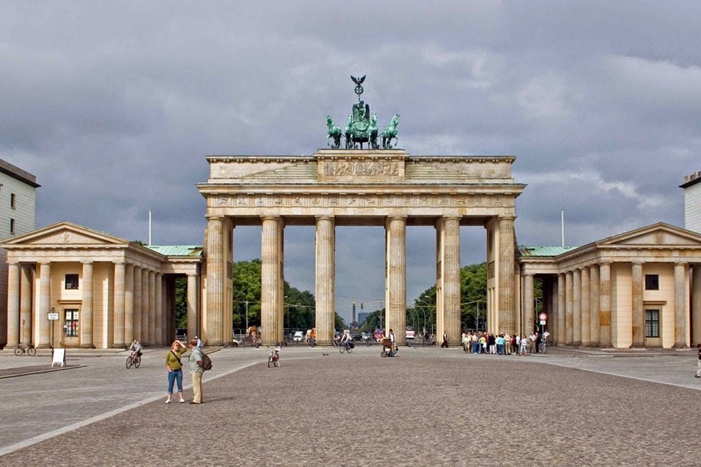
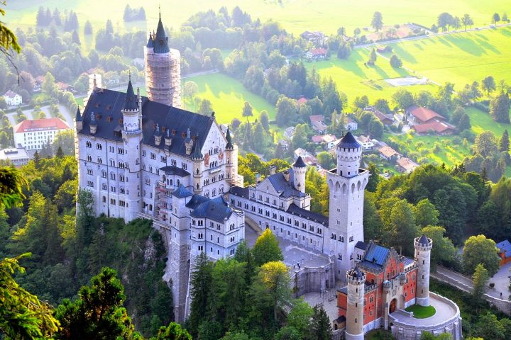
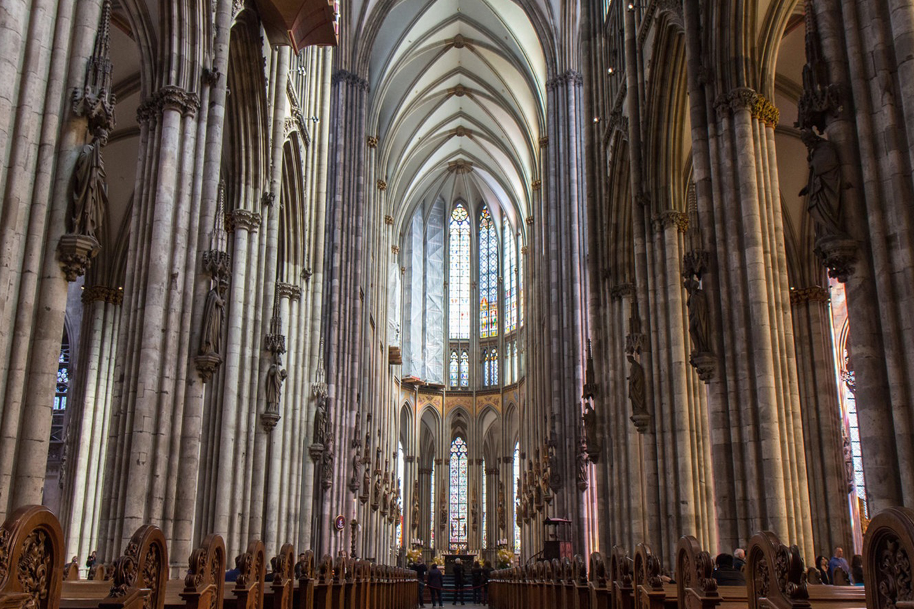
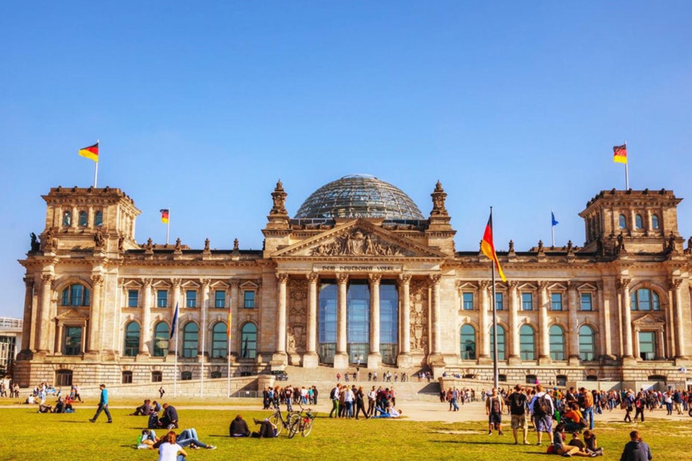
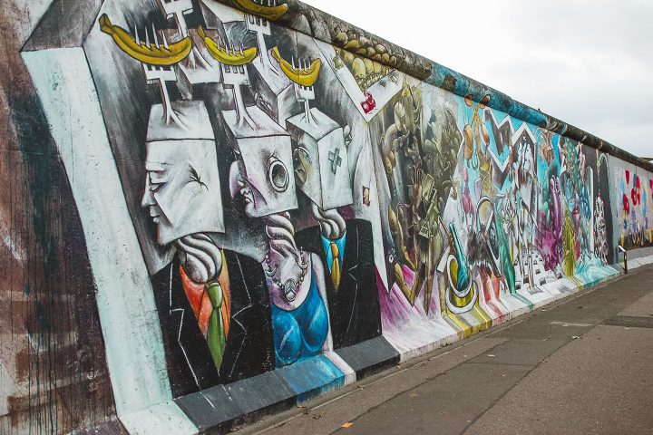
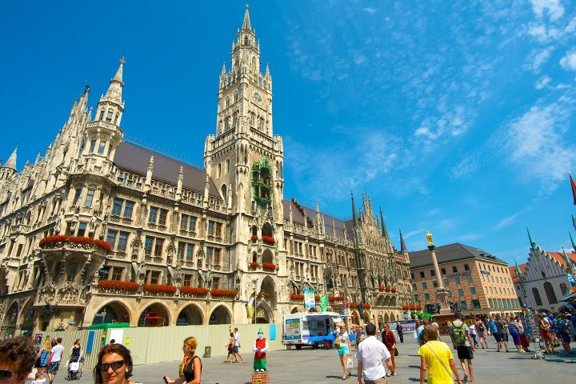
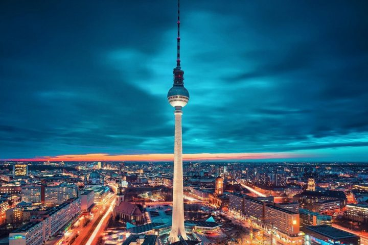

Historic and touristic places in Germany




The Berlin TV Tower (Fernsehturm) is one of the most recognizable landmarks in Germany and a powerful symbol of the country’s recent history...




Another important place in Berlin is the East Side Gallery, which reflects the city’s complex past...
Mariana Orozco Isabella Ibarra Aranza Contreras Rebeca Aviles Ximena Rodriguez Maria Fernanda Zepeda
Todos los derechos reservados.
2026